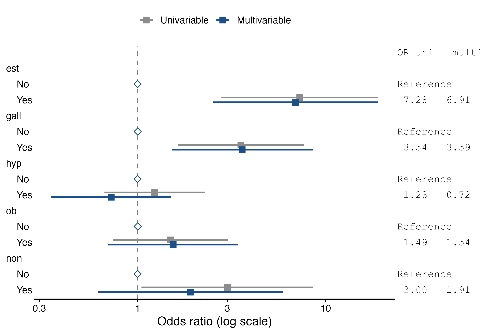

| case = 0 | case = 1 | Total | ||
|---|---|---|---|---|
| case | n (%) | 252 (80.0%) | 63 (20.0%) | 315 (100.0%) |
| est | No | 125 (49.6%) | 7 (11.1%) | 132 (41.9%) |
| est | Yes | 127 (50.4%) | 56 (88.9%) | 183 (58.1%) |
| gall | No | 228 (90.5%) | 46 (73.0%) | 274 (87.0%) |
| gall | Yes | 24 (9.5%) | 17 (27.0%) | 41 (13.0%) |
| hyp | No | 170 (67.5%) | 37 (58.7%) | 207 (65.7%) |
| hyp | Yes | 82 (32.5%) | 26 (41.3%) | 108 (34.3%) |
| ob | No | 82 (39.4%) | 16 (28.1%) | 98 (37.0%) |
| ob | Yes | 126 (60.6%) | 41 (71.9%) | 167 (63.0%) |
| ob | Missing | 44 (17.5%) | 6 (9.5%) | 50 (15.9%) |
| non | No | 76 (30.2%) | 7 (11.1%) | 83 (26.3%) |
| non | Yes | 176 (69.8%) | 56 (88.9%) | 232 (73.7%) |
Endometrial Cancer and Oestrogens
1:4 matched case-control study, real data
The study
In the 1970s, several studies linked the use of conjugated oestrogens after the menopause to endometrial cancer. In a Los Angeles retirement community, each of 63 women with endometrial cancer was matched with four women without it, living in the same community, of the same marital status and born within one year of the case. The data are a classic of the matched case-control literature (Breslow and Day 1980), available in R as Epi::bdendo. They ship with the module: in jamovi, Open ▸ Data Library ▸ Conditional Logistic Regression ▸ Endometrial cancer and oestrogens. Or download bdendo.csv.
| Variable | Content |
|---|---|
set |
matched set, 1–63 |
case |
1 = endometrial cancer, 0 = control |
est |
ever used oestrogens: Yes, No |
dur |
duration of conjugated oestrogen use: 0 = none (some of these women used other oestrogens), 1–4 = 1–11, 12–46, 48–92 and 96 months in these data (missing for 17 women) |
duration |
months of oestrogen use |
cest |
dose of conjugated oestrogen, 0–3 |
gall |
history of gallbladder disease |
hyp |
hypertension |
ob |
obesity (missing for 50 women) |
non |
use of non-oestrogen drugs |
age, agegrp, age3 |
age, and age in groups (matched on) |
Step 1: describe the data
- Analyses ▸ Regression ▸ Logistic Regression ▸ Conditional (Matched).
caseto Dependent Variable,setto Matching Variable, andest,gall,hyp,obandnonto Factors. - In Descriptives, tick Descriptive table.
The first row gives the numbers of controls and cases. The rest compares them: oestrogens were used by 56 (88.9%) of the cases and 127 (50.4%) of the controls, and gallbladder disease was more common in cases. The table describes every woman whose case/control status and matched set are known. Percentages of a factor are of the women with a known value, and a Missing row appears only for a variable with missing values: here ob, unknown for 50 women. The models, in contrast, use only the women complete for every variable, 265 of the 315.
Step 2: univariable and multivariable odds ratios
The coefficient table gives, for each factor, its reference level (OR = 1) and the odds ratio of every other level against it, with the confidence interval and p.
- In Model Coefficients, tick Univariable and multivariable, which adds the odds ratio of each variable alone, and Forest plot.
| Per set = Cases | Controls | Sets | Observations |
|---|---|---|---|
| 0 | 1 | 2 | 2 |
| 0 | 2 | 1 | 2 |
| 0 | 3 | 1 | 3 |
| 0 | 4 | 2 | 8 |
| 1 | 1 | 3 | 6 |
| 1 | 2 | 2 | 6 |
| 1 | 3 | 22 | 88 |
| 1 | 4 | 30 | 150 |
Note. 6 uninformative sets (no case or no control left)
| OR | Lower | Upper | p | OR | Lower Multivariable | Upper Multivariable | p | ||
|---|---|---|---|---|---|---|---|---|---|
| est | No | 1.000 | 1.000 | ||||||
| est | Yes | 7.276 | 2.786 | 19.003 | 0.000 | 6.910 | 2.513 | 19.001 | < .001 |
| gall | No | 1.000 | 1.000 | ||||||
| gall | Yes | 3.538 | 1.638 | 7.641 | 0.001 | 3.594 | 1.517 | 8.513 | .004 |
| hyp | No | 1.000 | 1.000 | ||||||
| hyp | Yes | 1.233 | 0.666 | 2.282 | 0.506 | 0.723 | 0.347 | 1.509 | .388 |
| ob | No | 1.000 | 1.000 | ||||||
| ob | Yes | 1.493 | 0.741 | 3.010 | 0.262 | 1.544 | 0.698 | 3.415 | .283 |
| non | No | 1.000 | 1.000 | ||||||
| non | Yes | 2.996 | 1.047 | 8.567 | 0.041 | 1.913 | 0.617 | 5.928 | .261 |

Oestrogen use has an odds ratio of 6.91 (95% CI 2.51–19.00) and gallbladder disease 3.59 (95% CI 1.52–8.51), adjusted for each other and for the other three factors. Alone, oestrogens give 7.28 and gallbladder disease 3.54: adjustment changes little, so these exposures do not confound each other much. Hypertension, obesity and non-oestrogen drugs show no clear association. The univariable odds ratios are computed on the same rows as the model, so the two columns differ only by the adjustment.
The Matched Sets table shows the price of the missing obesity values: 6 sets lost their case and no longer count, and many others lost controls. Since obesity is not associated here, drop hyp, ob and non from the model and refit with est and gall:
| Per set = Cases | Controls | Sets | Observations |
|---|---|---|---|
| 1 | 4 | 63 | 315 |
| OR | Lower 95% CI | Upper 95% CI | p | ||
|---|---|---|---|---|---|
| est | No | 1.000 | |||
| est | Yes | 8.288 | 3.500 | 19.624 | < .001 |
| gall | No | 1.000 | |||
| gall | Yes | 3.577 | 1.599 | 8.004 | .002 |
All 63 sets are back, complete, and the odds ratio for oestrogens is 8.29 (95% CI 3.50–19.62), with a narrower interval.
Step 3: duration of use
A dose-response relation strengthens a causal interpretation. Replace est with dur in Factors. In the Model Builder, put gall in block 1 and dur in block 2, and set the reference level of dur to 0 (no conjugated oestrogen). Tick Trend test (factors with 3+ levels).
| Model | Model | χ² | df | p | |
|---|---|---|---|---|---|
| 1 | - | 2 | 31.349 | 4 | < .001 |
| OR | Lower 95% CI | Upper 95% CI | p | p trend | ||
|---|---|---|---|---|---|---|
| gall | No | 1.000 | ||||
| gall | Yes | 3.187 | 1.318 | 7.704 | .010 | |
| dur | 0 | 1.000 | < .001 | 0.000 | ||
| dur | 1 | 2.970 | 0.979 | 9.006 | .054 | |
| dur | 2 | 4.394 | 1.723 | 11.201 | .002 | |
| dur | 3 | 9.305 | 3.120 | 27.746 | < .001 | |
| dur | 4 | 9.515 | 3.561 | 25.426 | < .001 |
The odds ratio rises with each category of duration, from 3.0 in the shortest to 9.5 in the longest. On the reference row of dur, p is the likelihood ratio test of the four categories together (p < .001, the same test as the model comparison), and p trend tests a steady rise across the categories, scored 1, 2, 3, 4, 5 in their order (p < .001).
A loosely matched variable
Age was matched within a year, not exactly, so it still varies a little within the sets, and the module estimates it:
| OR | Lower 95% CI | Upper 95% CI | p | ||
|---|---|---|---|---|---|
| est | No | 1.000 | |||
| est | Yes | 8.574 | 3.579 | 20.538 | < .001 |
| gall | No | 1.000 | |||
| gall | Yes | 3.556 | 1.595 | 7.930 | .002 |
| age | per unit | 0.750 | 0.463 | 1.216 | .244 |
The odds ratio of 0.75 per year of age is not an age effect. It contrasts women born a few months apart within a set, which says nothing about the role of age, and its wide interval reflects how little information is left. Matching variables belong in the model only as interactions with an exposure (see the infertility use case).
References
Breslow, N. E., and N. E. Day. 1980. Statistical Methods in Cancer Research. Volume I: The Analysis of Case-Control Studies. IARC Scientific Publications 32. International Agency for Research on Cancer.